第7章 · 原课件与完整中文翻译
上方为英文原页，下方为对应的完整中文翻译，标题、正文、图内文字和公式按原页顺序排列。
页号按PDF顺序。原课件的历史日期、学期、课堂安排和研究结论按原文保留；相关概念与适用条件见教程正文。符号、代码、作者姓名及便于检索的专有名称保留原文。
Lecture 07 · 69页
Lecture 07 · PDF p1
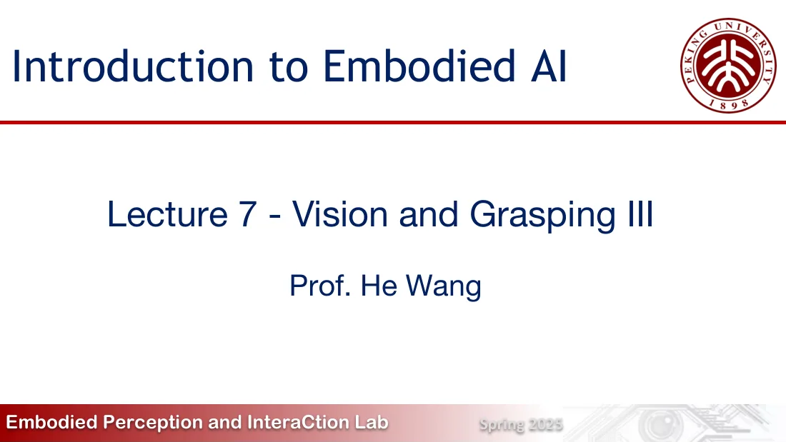
第7讲——视觉与抓取 III
王鹤教授
具身感知与交互实验室｜2025年春季
Lecture 07 · PDF p2
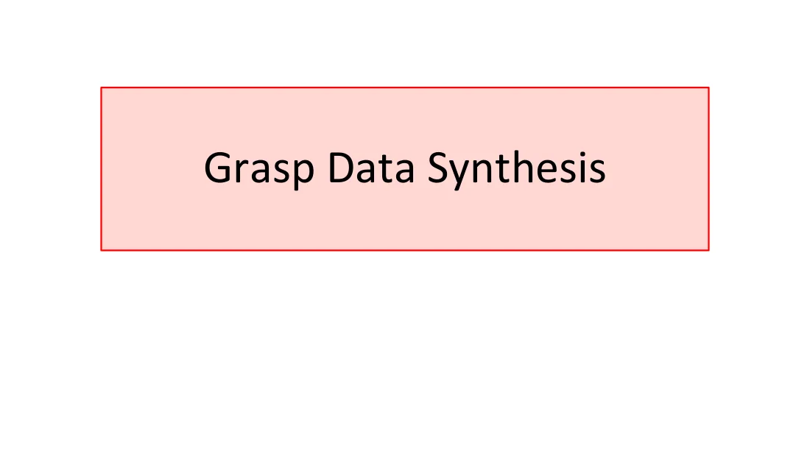
Lecture 07 · PDF p3
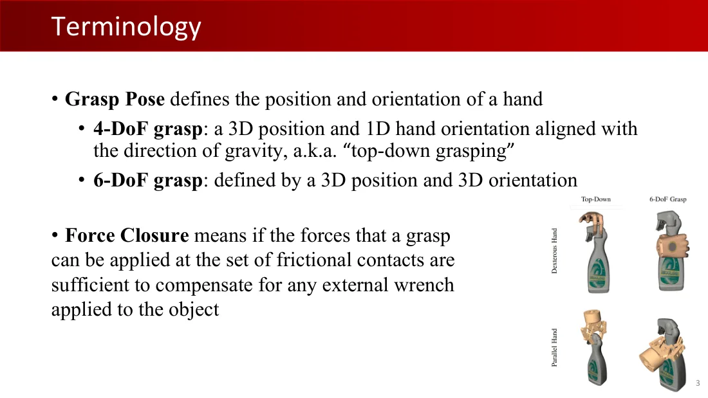
- 抓取位姿定义手的位置和朝向。
- 4自由度抓取：三维位置，以及与重力方向对齐的一维手朝向，也称“自上而下抓取”。
- 6自由度抓取：由三维位置与三维朝向定义。
- 力闭合意味着：抓取在一组有摩擦接触上能够施加的力，足以补偿作用于物体的任意外部力旋量。
灵巧手｜平行夹爪｜自上而下｜6自由度抓取
Lecture 07 · PDF p4
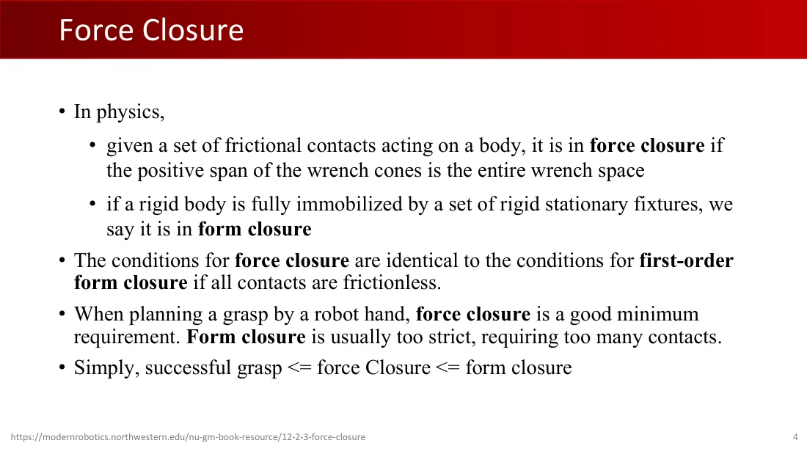
- 在物理学中：
- 给定作用在刚体上的一组有摩擦接触，如果力旋量锥的正张成覆盖整个力旋量空间，则该接触组处于力闭合。
- 如果一个刚体被一组刚性固定夹具完全固定，则称其处于形闭合。
- 如果所有接触均无摩擦，力闭合条件与一阶形闭合条件相同。
- 机器人手规划抓取时，力闭合是合适的最低要求。形闭合通常过于严格，需要太多接触。
- 简单地说：成功抓取 ≤ 力闭合 ≤ 形闭合。
https://modernrobotics.northwestern.edu/nu-gm-book-resource/12-2-3-force-closure
Lecture 07 · PDF p5
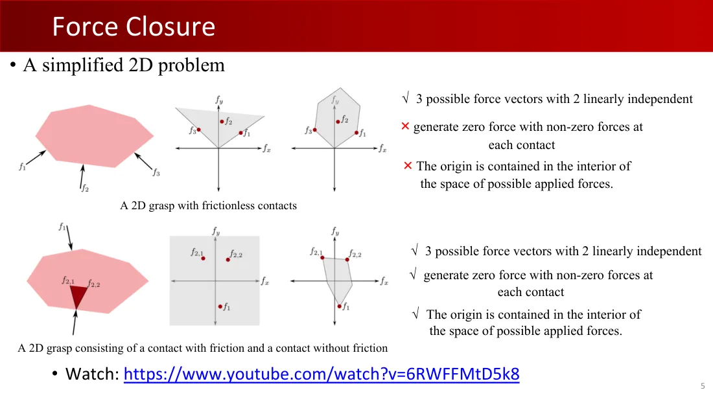
- 简化的二维问题。
无摩擦接触的二维抓取
- ✓ 三个可能的力向量，其中两个线性独立。
- × 每个接触均施加非零力时，无法产生零合力。
- × 原点不在可能施加力的空间内部。
一个有摩擦接触与一个无摩擦接触构成的二维抓取
- ✓ 三个可能的力向量，其中两个线性独立。
- ✓ 每个接触均施加非零力时，能够产生零合力。
- ✓ 原点位于可能施加力的空间内部。
观看：https://www.youtube.com/watch?v=6RWFFMtD5k8
Lecture 07 · PDF p6
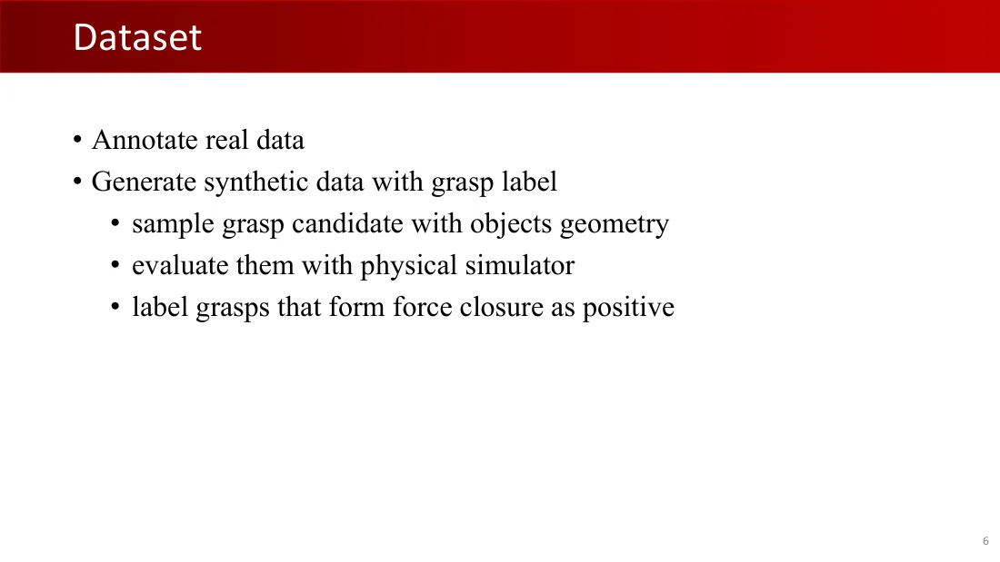
- 标注真实数据。
- 生成带抓取标签的合成数据。
- 根据物体几何采样候选抓取。
- 用物理模拟器评估这些候选。
- 将构成力闭合的抓取标为正例。
Lecture 07 · PDF p7
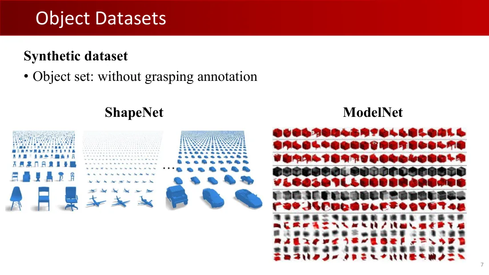
合成数据集
物体集合：不带抓取标注。
ShapeNet｜ModelNet
Lecture 07 · PDF p8
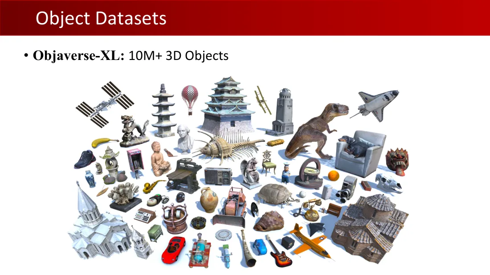
Objaverse-XL：1000万以上三维物体。
Lecture 07 · PDF p9
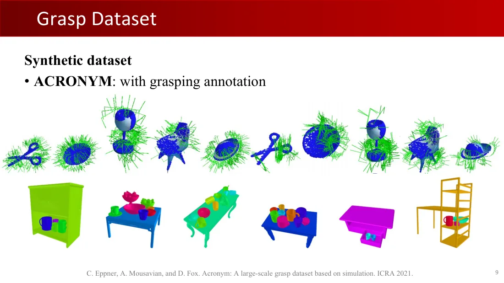
合成数据集
ACRONYM：带抓取标注。
C. Eppner、A. Mousavian、D. Fox：《ACRONYM：基于仿真的大规模抓取数据集》，ICRA 2021。
Lecture 07 · PDF p10
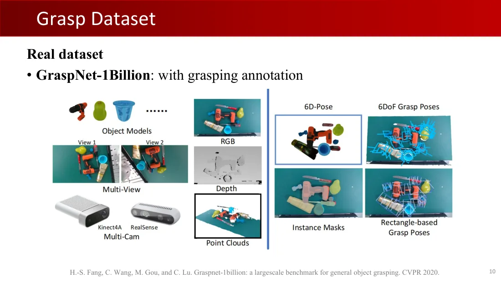
真实数据集
- GraspNet-1Billion：带抓取标注。
物体模型；视角1、视角2；多视角；Kinect4A、RealSense；多相机；RGB彩色图；深度；点云；6D位姿；6自由度抓取位姿；实例掩码；基于矩形的抓取位姿。
H.-S. Fang、C. Wang、M. Gou、C. Lu：《GraspNet-1Billion：通用物体抓取的大规模基准》，CVPR 2020。
Lecture 07 · PDF p11
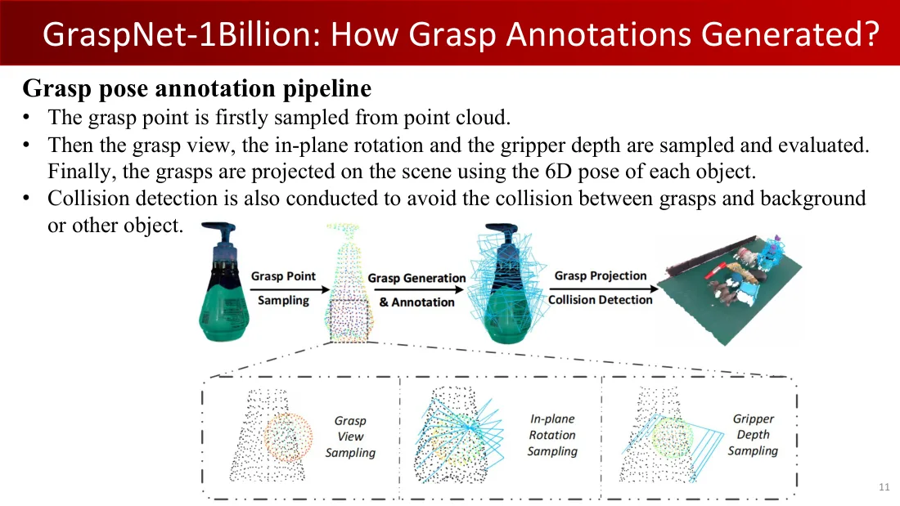
抓取位姿标注管线
- 首先从点云采样抓取点。
- 随后采样并评估抓取视角、平面内旋转和夹爪深入距离。最后利用每个物体的6D位姿，将抓取投影到场景中。
- 还进行碰撞检测，以避免抓取与背景或其他物体碰撞。
抓取点采样 → 抓取生成与标注 → 抓取投影 / 碰撞检测。
抓取视角采样｜平面内旋转采样｜夹爪深入距离采样。
Lecture 07 · PDF p12
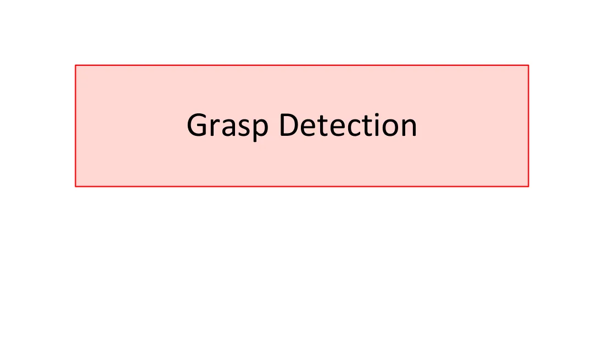
Lecture 07 · PDF p13
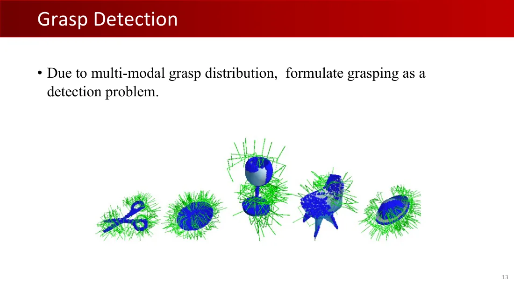
由于抓取分布具有多峰性，将抓取表述为检测问题。
Lecture 07 · PDF p14
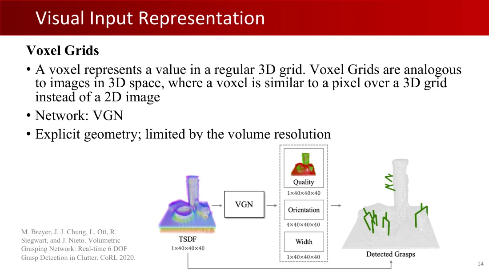
体素网格
- 体素表示规则三维网格中的一个值。体素网格类似三维空间中的图像：体素类似像素，但位于三维网格而非二维图像。
- 网络：VGN。
- 显式几何；受体积分辨率限制。
TSDF截断符号距离场｜质量｜朝向｜宽度｜检测到的抓取。
M. Breyer、J. J. Chung、L. Ott、R. Siegwart、J. Nieto：《体积抓取网络：杂乱场景中的实时6自由度抓取检测》，CoRL 2020。
Lecture 07 · PDF p15
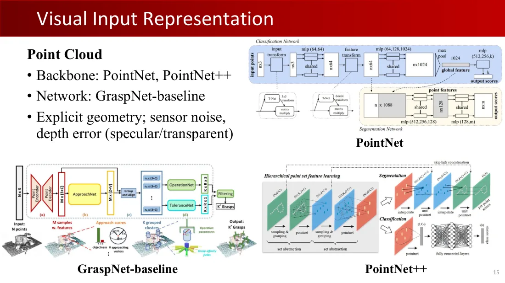
点云
- 骨干网络：PointNet、PointNet++。
- 网络：GraspNet-baseline。
- 显式几何；传感器噪声、深度误差（镜面反射/透明）。
PointNet
分类网络：输入点 n×3 → 输入变换 → 多层感知机(64,64)，共享 → 特征变换 → 多层感知机(64,128,1024)，共享 → 最大池化 → 1024维全局特征 → 多层感知机(512,256,k) → 输出分数 k。T-Net：3×3变换、64×64变换；矩阵乘法。
分割网络：点特征；n×1088 → 多层感知机(512,256,128)，共享 → n×128 → 多层感知机(128,m)，共享 → 输出分数 n×m。
PointNet++
分层点集特征学习：采样与分组 → PointNet → 集合抽象；采样与分组 → PointNet → 集合抽象。分割：插值 → 单位PointNet → 插值 → 单位PointNet → 逐点分数；跳跃链接拼接。分类：PointNet → 全连接层 → 类别分数。
GraspNet-baseline
输入：N个点 → 点编码器 / 点解码器 → M个样本及其特征 → 接近方向网络ApproachNet → 接近方向分数 → 分组与对齐 → K个分组簇 → 操作网络OperationNet / 容错网络ToleranceNet → 筛选 → 输出K′个抓取。物体性、V个接近向量、操作参数、抓取亲和场。维度：N×3、M×(3+C)、M×(2+V)、nᵢ×(3+C)、K×(12×R)、K×R×2。
Lecture 07 · PDF p16
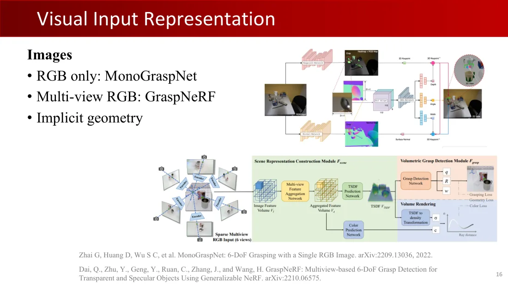
图像
- 仅RGB：MonoGraspNet。
- 多视角RGB：GraspNeRF。
- 隐式几何。
MonoGraspNet
RGB输入；关键点网络；法线网络；裁剪；热图＋RGB图；二维关键点；ROI对齐；CNN骨干；深度、角度、宽度；表面法线；三维关键点；三维视图、二维视图。
GraspNeRF
稀疏多视角RGB输入（6个视角）；编码器；场景表示构建模块 F_scene：图像特征体 Vᵢ → 多视角特征聚合网络 → 聚合特征体 V_A → TSDF预测网络 → TSDF V_TSDF。体积抓取检测模块 F_grasp：抓取检测网络 → q、R、w；抓取损失、几何损失、颜色损失。体渲染：TSDF转密度 → σ；颜色预测网络 → c；射线距离。
Zhai G、Huang D、Wu S C等：《MonoGraspNet：利用单张RGB图像进行6自由度抓取》，arXiv:2209.13036，2022。
Dai Q.、Zhu Y.、Geng Y.、Ruan C.、Zhang J.、Wang H.：《GraspNeRF：利用可泛化NeRF，基于多视角检测透明与镜面物体的6自由度抓取》，arXiv:2210.06575。
Lecture 07 · PDF p17
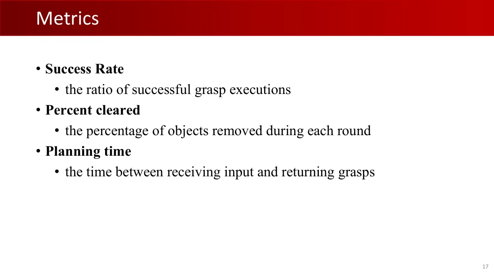
- 成功率
- 成功执行抓取的比例。
- 清理率
- 每轮移除物体的百分比。
- 规划时间
- 从接收输入到返回抓取的时间。
Lecture 07 · PDF p18
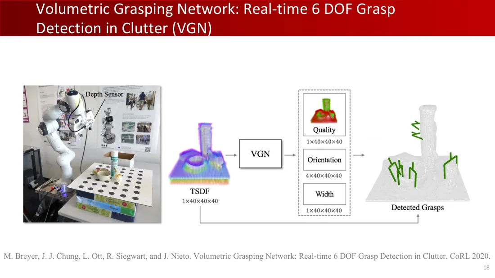
深度传感器｜TSDF截断符号距离场｜质量｜朝向｜宽度｜检测到的抓取。
M. Breyer、J. J. Chung、L. Ott、R. Siegwart、J. Nieto：《体积抓取网络：杂乱场景中的实时6自由度抓取检测》，CoRL 2020。
Lecture 07 · PDF p19
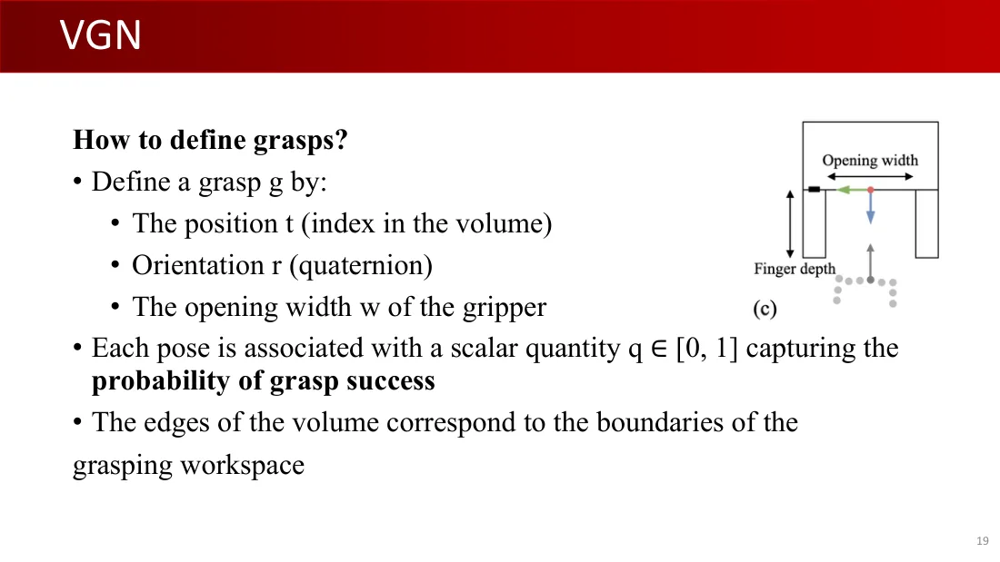
如何定义抓取？
- 用以下量定义抓取g：
- 位置t（体积中的索引）。
- 朝向r（四元数）。
- 夹爪张开宽度w。
- 每个位姿关联标量q∈[0,1]，表示抓取成功概率。
- 体积边界对应抓取工作空间的边界。
张开宽度｜手指深入距离。
Lecture 07 · PDF p20
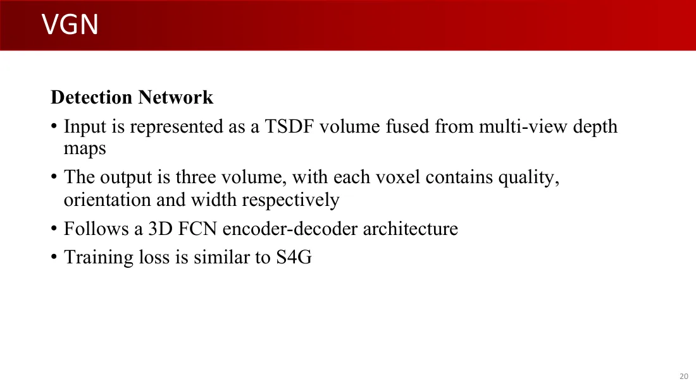
检测网络
- 输入表示为由多视角深度图融合得到的TSDF体积。
- 输出是三个体积，各体素分别包含质量、朝向、宽度。
- 采用三维全卷积网络编码器—解码器架构。
- 训练损失与S4G类似。
Lecture 07 · PDF p21
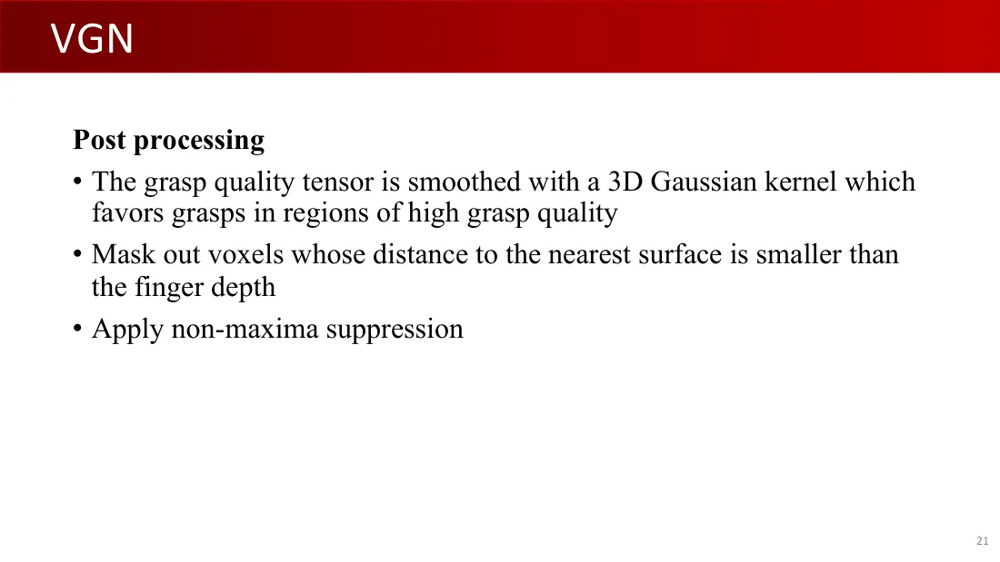
后处理
- 用三维高斯核平滑抓取质量张量，使高抓取质量区域的抓取更受偏好。
- 掩蔽距最近表面小于手指深入距离的体素。
- 应用非极大值抑制。
Lecture 07 · PDF p22
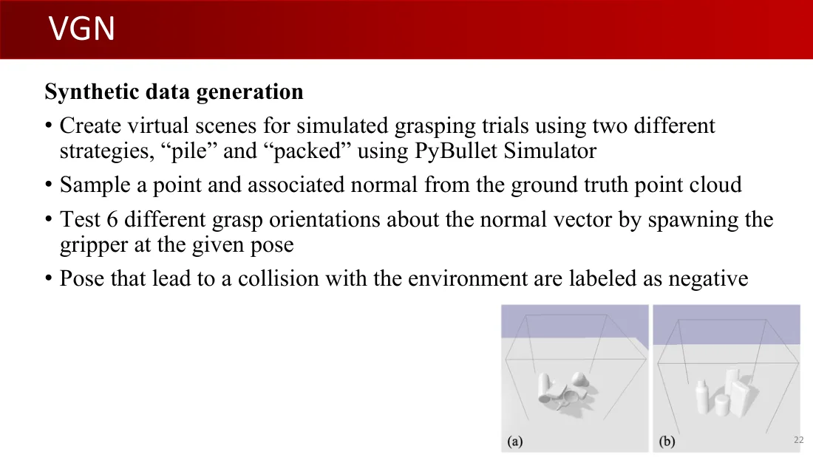
合成数据生成
- 使用PyBullet模拟器，以“堆叠”和“紧密排列”两种策略创建用于仿真抓取试验的虚拟场景。
- 从真值点云中采样一个点及其法线。
- 围绕法线测试6种抓取朝向：在给定位姿生成夹爪。
- 导致与环境碰撞的位姿标为负例。
堆叠｜紧密排列。
Lecture 07 · PDF p23
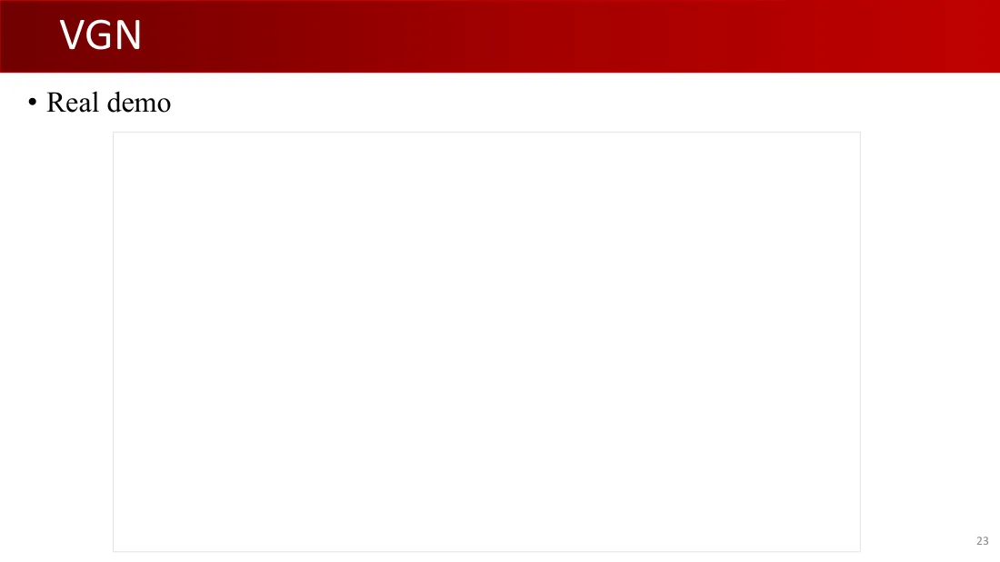
真实演示。
Lecture 07 · PDF p24
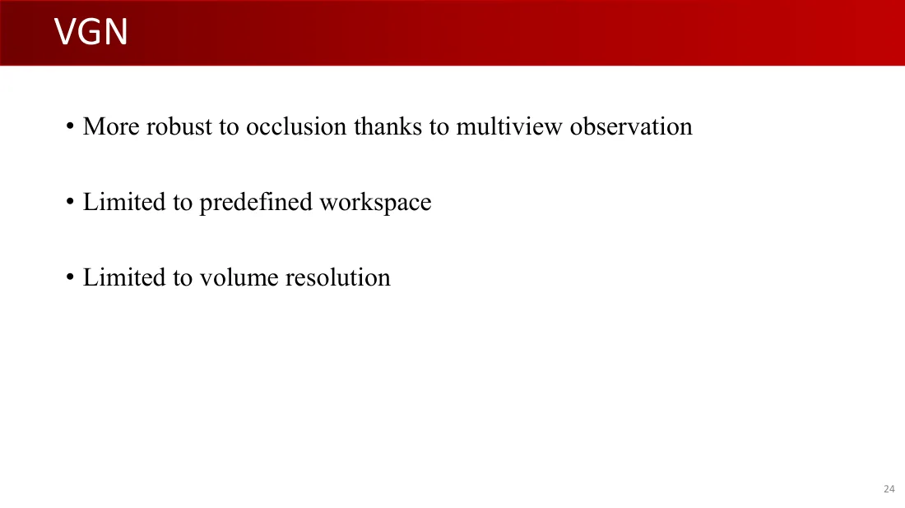
- 由于多视角观测，对遮挡更鲁棒。
- 受预定义工作空间限制。
- 受体积分辨率限制。
Lecture 07 · PDF p25
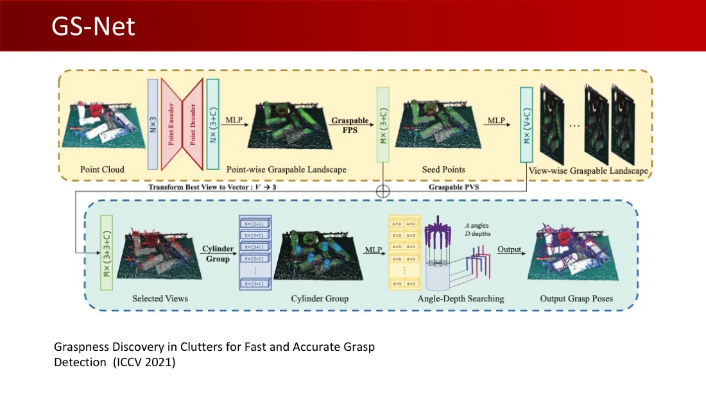
为快速准确的抓取检测发现杂乱场景中的可抓取性（ICCV 2021）。
Lecture 07 · PDF p26
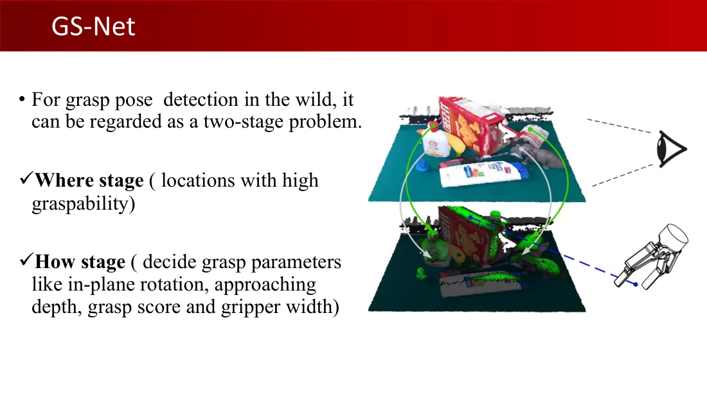
- 自然场景中的抓取位姿检测，可视为两阶段问题。
- 在哪里抓：具有高可抓取性的位置。
- 怎样抓：确定抓取参数，例如平面内旋转、接近深度、抓取分数和夹爪宽度。
Lecture 07 · PDF p27
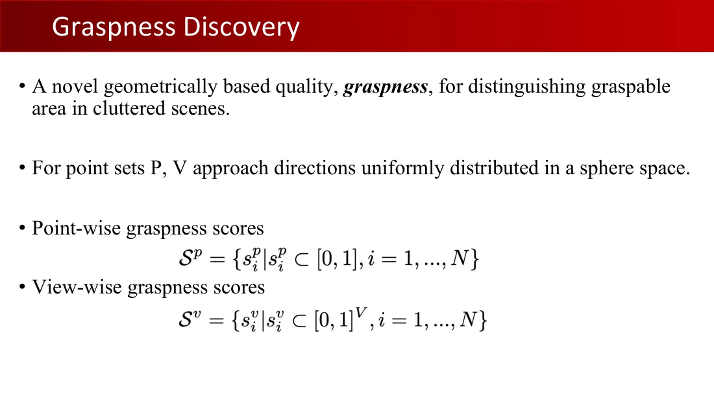
- 一种新的几何质量指标——可抓取性，用于区分杂乱场景中的可抓区域。
- 对于点集P，V个接近方向均匀分布在球面空间。
- 逐点可抓取性分数：$S^p=\{s_i^p\mid s_i^p\subset[0,1],i=1,\ldots,N\}$。
- 逐视图可抓取性分数：$S^v=\{s_i^v\mid s_i^v\subset[0,1]^V,i=1,\ldots,N\}$。
Lecture 07 · PDF p28
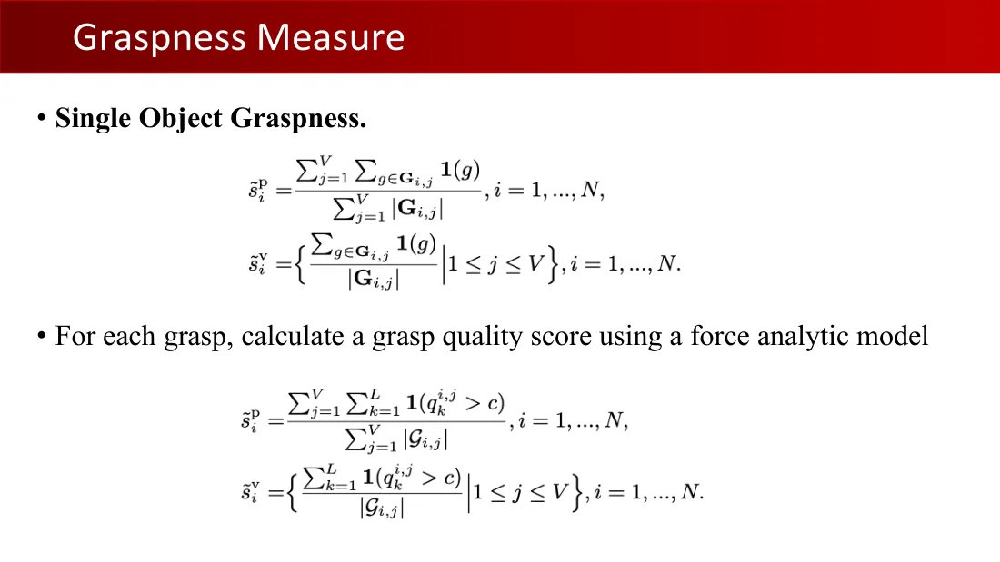
- 单物体可抓取性。
$\tilde s_i^p=\frac{\sum_{j=1}^V\sum_{g\in\mathbf G_{i,j}}\mathbf1(g)}{\sum_{j=1}^V|\mathbf G_{i,j}|},\ i=1,\ldots,N.$
$\tilde s_i^v=\{\frac{\sum_{g\in\mathbf G_{i,j}}\mathbf1(g)}{|\mathbf G_{i,j}|}\mid1\le j\le V\},\ i=1,\ldots,N.$
- 对每个抓取，利用力分析模型计算抓取质量分数。
$\tilde s_i^p=\frac{\sum_{j=1}^V\sum_{k=1}^L\mathbf1(q_k^{i,j}>c)}{\sum_{j=1}^V|\mathcal G_{i,j}|},\ i=1,\ldots,N.$
$\tilde s_i^v=\{\frac{\sum_{k=1}^L\mathbf1(q_k^{i,j}>c)}{|\mathcal G_{i,j}|}\mid1\le j\le V\},\ i=1,\ldots,N.$
Lecture 07 · PDF p29
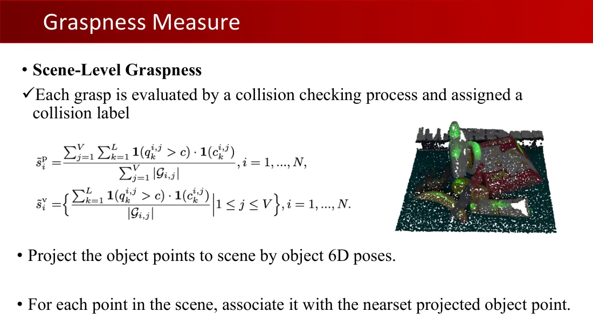
- 场景级可抓取性。
- 通过碰撞检查评估每个抓取，并赋予碰撞标签。
$\tilde s_i^p=\frac{\sum_{j=1}^V\sum_{k=1}^L\mathbf1(q_k^{i,j}>c)\cdot\mathbf1(c_k^{i,j})}{\sum_{j=1}^V|\mathcal G_{i,j}|},\ i=1,\ldots,N.$
$\tilde s_i^v=\{\frac{\sum_{k=1}^L\mathbf1(q_k^{i,j}>c)\cdot\mathbf1(c_k^{i,j})}{|\mathcal G_{i,j}|}\mid1\le j\le V\},\ i=1,\ldots,N.$
- 根据物体6D位姿将物体点投影到场景中。
- 对场景中的每个点，关联最近的投影物体点。
Lecture 07 · PDF p30
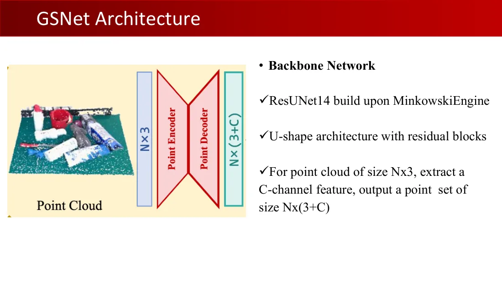
骨干网络
- ResUNet14基于MinkowskiEngine构建。
- 含残差块的U形架构。
- 对于N×3点云，提取C通道特征，输出大小为N×(3+C)的点集。
点编码器｜点解码器｜输入点云｜输出逐点特征。
Lecture 07 · PDF p31
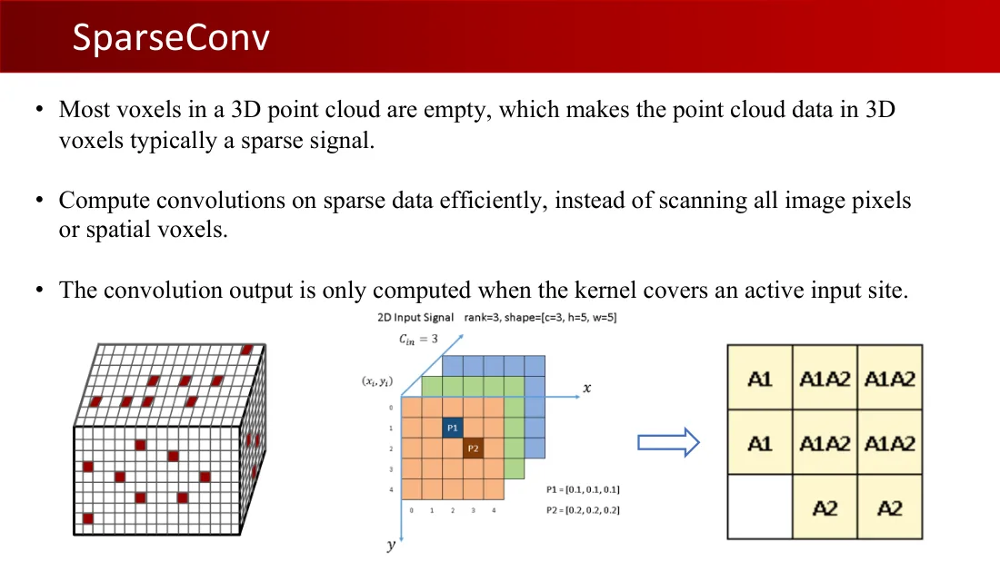
- 三维点云中的大多数体素为空，因此三维体素中的点云数据通常是稀疏信号。
- 高效地在稀疏数据上计算卷积，而不是扫描所有图像像素或空间体素。
- 只有当卷积核覆盖一个活跃输入位置时才计算卷积输出。
输入｜输出｜稀疏卷积｜卷积核。
Lecture 07 · PDF p32
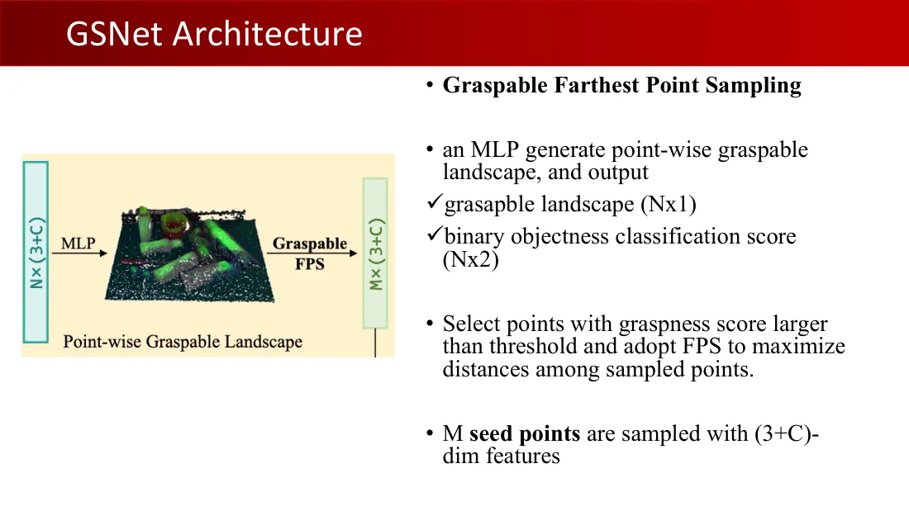
可抓点最远点采样
- 一个多层感知机生成逐点可抓取性分布，输出：
- 可抓取性分布（N×1）。
- 二分类物体性分数（N×2）。
- 选择可抓取性分数高于阈值的点，采用最远点采样，使采样点间距离最大化。
- 采样M个种子点，每点带(3+C)维特征。
点云｜逐点可抓取性分布｜可抓点最远点采样｜种子点；N×(3+C)、M×(3+C)。
Lecture 07 · PDF p33
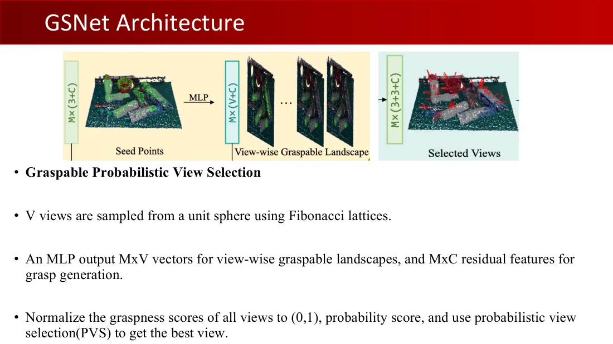
可抓取性概率化视图选择
- 利用斐波那契网格从单位球面采样V个视图。
- 一个多层感知机输出M×V向量作为逐视图可抓取性分布，并输出M×C残差特征用于抓取生成。
- 将所有视图的可抓取性分数归一化到(0,1)作为概率分数，利用概率化视图选择（PVS）获得最佳视图。
种子点｜逐视图可抓取性分布｜概率化视图选择｜选定视图；M×(3+C)、M×V、M×C。
Lecture 07 · PDF p34
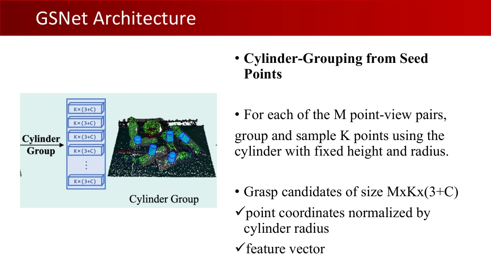
从种子点进行圆柱分组
- 对于M个点—视图对中的每一对，利用固定高度和半径的圆柱分组并采样K个点。
- 抓取候选大小：M×K×(3+C)。
- 以圆柱半径归一化点坐标。
- 特征向量。
圆柱分组｜抓取候选｜选定视图。
Lecture 07 · PDF p35
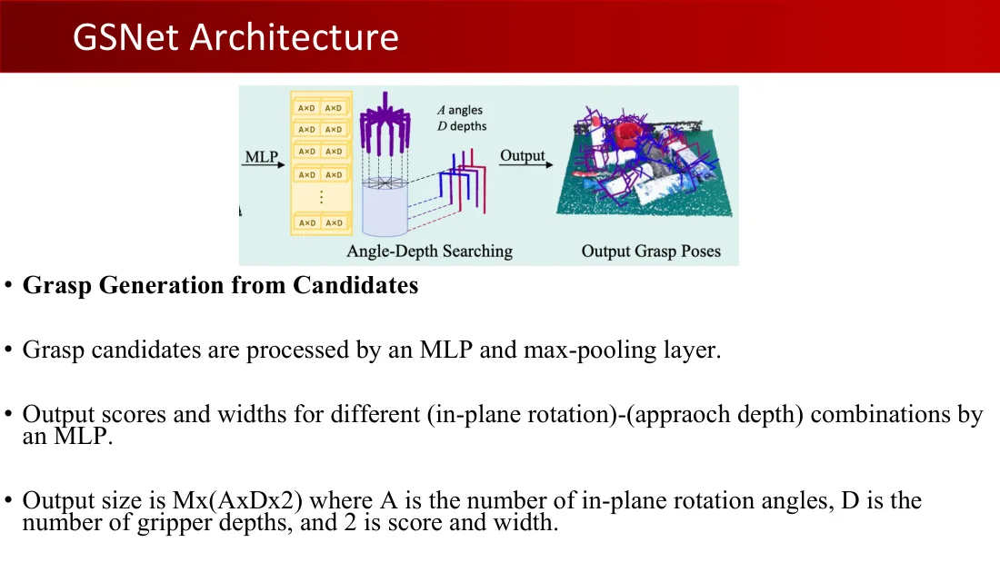
从候选生成抓取
- 利用多层感知机与最大池化层处理抓取候选。
- 用多层感知机输出不同（平面内旋转）—（接近深度）组合的分数与宽度。
- 输出大小M×(A×D×2)，其中A为平面内转角数量，D为夹爪深入距离数量，2表示分数与宽度。
角度—深度搜索｜输出抓取位姿｜多层感知机｜最大池化。
Lecture 07 · PDF p36
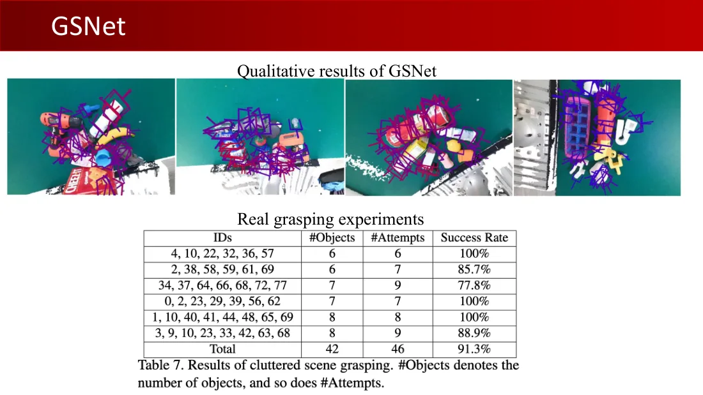
GSNet定性结果
真实抓取实验
| 编号 | 物体数 | 尝试数 | 成功率 |
|---|---|---|---|
| 4,10,22,32,36,57 | 6 | 6 | 100% |
| 2,38,58,59,61,69 | 6 | 7 | 85.7% |
| 34,37,64,66,68,72,77 | 7 | 9 | 77.8% |
| 0,2,23,29,39,56,62 | 7 | 7 | 100% |
| 1,10,40,41,44,48,65,69 | 8 | 8 | 100% |
| 3,9,10,23,33,42,63,68 | 8 | 9 | 88.9% |
| 总计 | 42 | 46 | 91.3% |
表7：杂乱场景抓取结果。#Objects表示物体数量，#Attempts同样表示尝试数量。
Lecture 07 · PDF p37
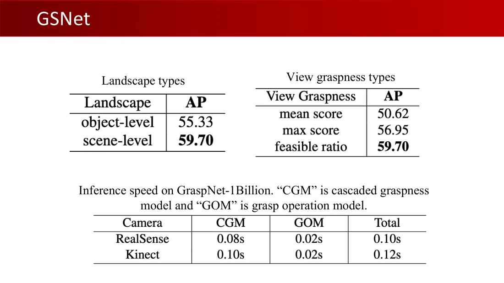
分布类型
| 分布 | 平均精度AP |
|---|---|
| 物体级 | 55.33 |
| 场景级 | 59.70 |
视图可抓取性类型
| 视图可抓取性 | 平均精度AP |
|---|---|
| 平均分 | 50.62 |
| 最高分 | 56.95 |
| 可行比例 | 59.70 |
GraspNet-1Billion上的推理速度。“CGM”为级联可抓取性模型，“GOM”为抓取操作模型。
| 相机 | CGM | GOM | 总计 |
|---|---|---|---|
| RealSense | 0.08秒 | 0.02秒 | 0.10秒 |
| Kinect | 0.10秒 | 0.02秒 | 0.12秒 |
Lecture 07 · PDF p38
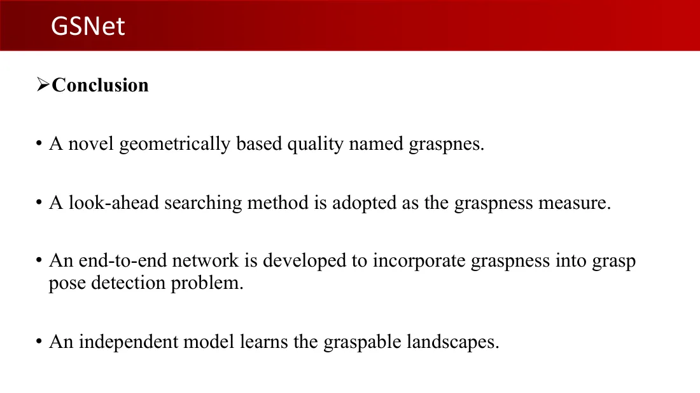
结论
- 一种新的几何质量指标，称为可抓取性。
- 采用向前看搜索方法度量可抓取性。
- 开发端到端网络，将可抓取性融入抓取位姿检测问题。
- 独立模型学习可抓取性分布。
Lecture 07 · PDF p39
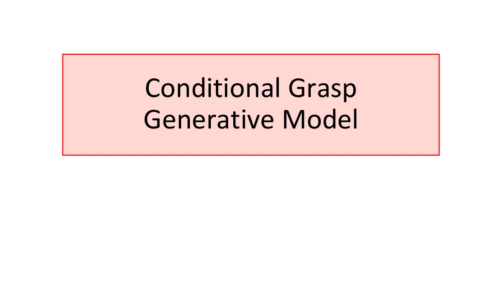
Lecture 07 · PDF p40
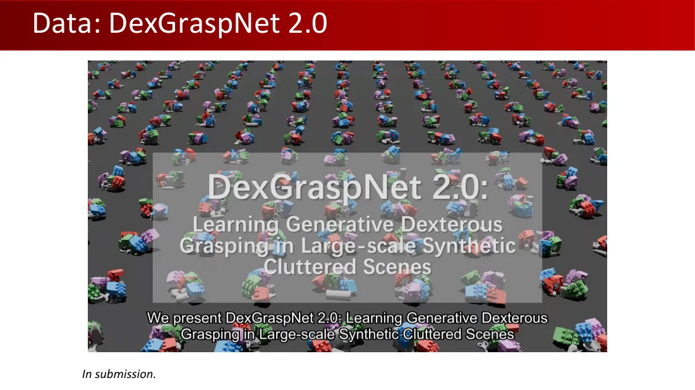
DexGraspNet 2.0：在大规模合成杂乱场景中学习生成式灵巧抓取
我们提出DexGraspNet 2.0：在大规模合成杂乱场景中学习生成式灵巧抓取。
投稿中。
Lecture 07 · PDF p41
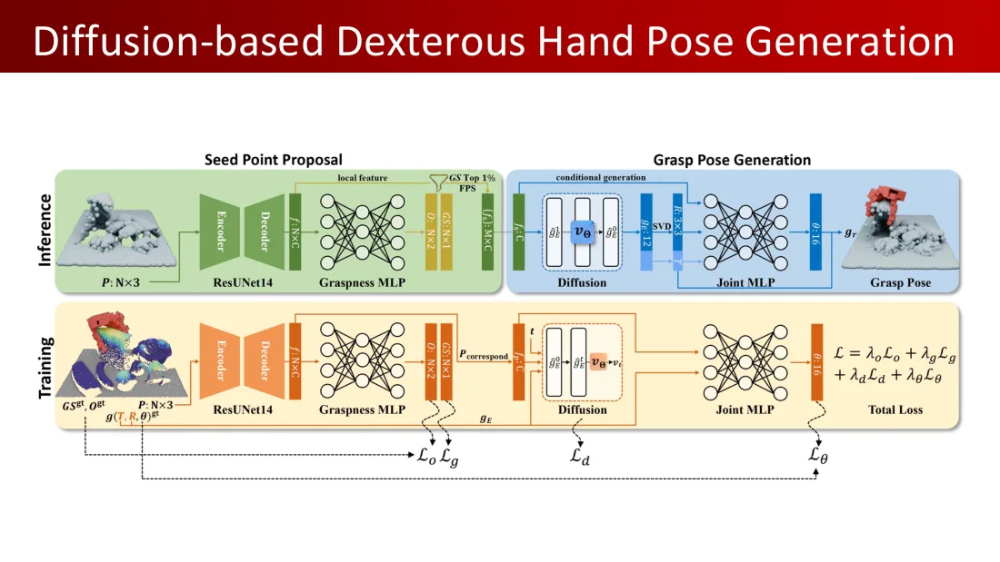
推理
种子点提议：点云P（N×3）→ ResUNet14编码器 / 解码器 → 局部特征N×C → 可抓取性多层感知机 → 可抓取性GS（N×1）与物体性O（N×2）；可抓取性前1%、最远点采样；种子特征f_s（M×C）。
抓取位姿生成：条件生成；扩散；g_E¹ → v_θ → g_E⁰；GS_E：12维，R：3×3，奇异值分解SVD；关节多层感知机 → θ：16维 → 抓取位姿g_r。
训练
真值可抓取性GS^gt、物体性O^gt、抓取g(T,R,θ)^gt；点云P（N×3）→ ResUNet14编码器 / 解码器 → 可抓取性多层感知机；对应点P_correspond；扩散的时间t、g_Eᵗ、g_E⁰及预测v_θ和真值v_gt；关节多层感知机。
总损失：$L=\lambda_oL_o+\lambda_gL_g+\lambda_dL_d+\lambda_\theta L_\theta$。
Lecture 07 · PDF p42
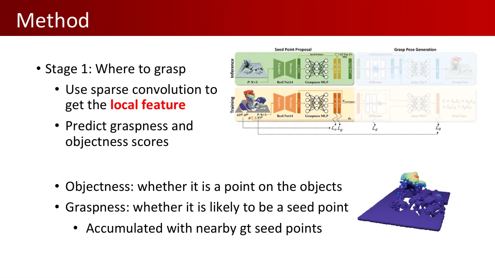
阶段1：在哪里抓
- 使用稀疏卷积获得局部特征。
- 预测可抓取性与物体性分数。
- 物体性：是否为物体上的点。
- 可抓取性：是否可能成为种子点。
- 由邻近真值种子点累积得到。
推理
种子点提议：点云P（N×3）→ ResUNet14编码器 / 解码器 → 局部特征N×C → 可抓取性多层感知机 → 可抓取性GS（N×1）与物体性O（N×2）；可抓取性前1%、最远点采样；种子特征f_s（M×C）。
抓取位姿生成：条件生成；扩散；g_E¹ → v_θ → g_E⁰；GS_E：12维，R：3×3，奇异值分解SVD；关节多层感知机 → θ：16维 → 抓取位姿g_r。
训练
真值可抓取性GS^gt、物体性O^gt、抓取g(T,R,θ)^gt；点云P（N×3）→ ResUNet14编码器 / 解码器 → 可抓取性多层感知机；对应点P_correspond；扩散的时间t、g_Eᵗ、g_E⁰及预测v_θ和真值v_gt；关节多层感知机。
总损失：$L=\lambda_oL_o+\lambda_gL_g+\lambda_dL_d+\lambda_\theta L_\theta$。
Lecture 07 · PDF p43
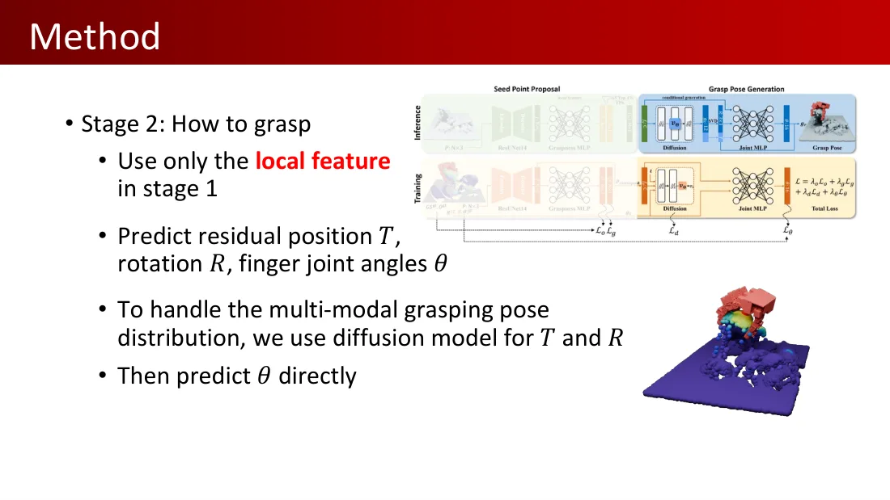
阶段2：怎样抓
- 仅使用阶段1的局部特征。
- 预测残差位置T、旋转R与手指关节角θ。
- 为处理多峰抓取位姿分布，使用扩散模型生成T和R。
- 随后直接预测θ。
推理
种子点提议：点云P（N×3）→ ResUNet14编码器 / 解码器 → 局部特征N×C → 可抓取性多层感知机 → 可抓取性GS（N×1）与物体性O（N×2）；可抓取性前1%、最远点采样；种子特征f_s（M×C）。
抓取位姿生成：条件生成；扩散；g_E¹ → v_θ → g_E⁰；GS_E：12维，R：3×3，奇异值分解SVD；关节多层感知机 → θ：16维 → 抓取位姿g_r。
训练
真值可抓取性GS^gt、物体性O^gt、抓取g(T,R,θ)^gt；点云P（N×3）→ ResUNet14编码器 / 解码器 → 可抓取性多层感知机；对应点P_correspond；扩散的时间t、g_Eᵗ、g_E⁰及预测v_θ和真值v_gt；关节多层感知机。
总损失：$L=\lambda_oL_o+\lambda_gL_g+\lambda_dL_d+\lambda_\theta L_\theta$。
Lecture 07 · PDF p44
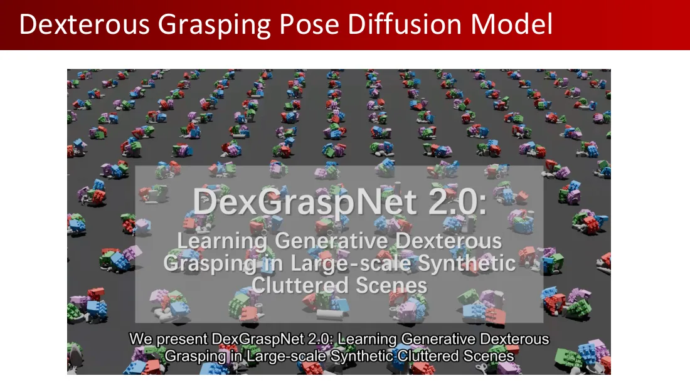
DexGraspNet 2.0：在大规模合成杂乱场景中学习生成式灵巧抓取
我们提出DexGraspNet 2.0：在大规模合成杂乱场景中学习生成式灵巧抓取。
Lecture 07 · PDF p45
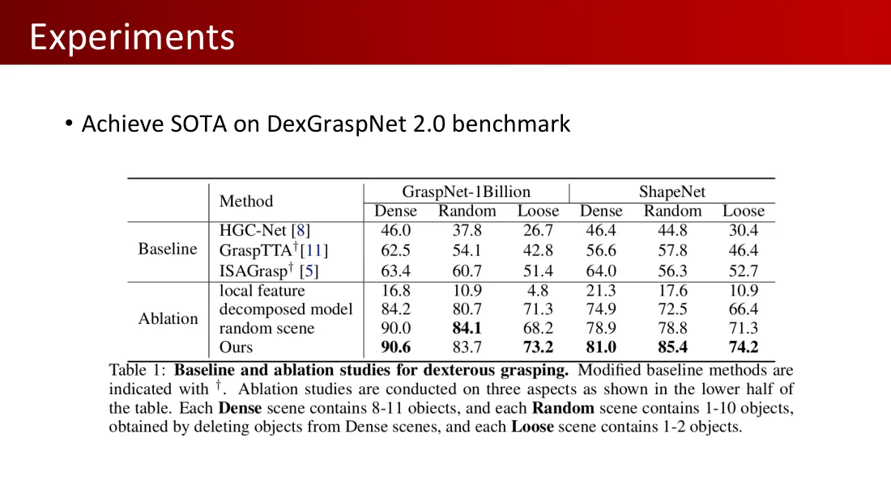
- 在DexGraspNet 2.0基准达到最先进水平。
| 组别 | 方法 | GraspNet密集 | GraspNet随机 | GraspNet疏松 | ShapeNet密集 | ShapeNet随机 | ShapeNet疏松 |
|---|---|---|---|---|---|---|---|
| 基线 | HGC-Net [8] | 46.0 | 37.8 | 26.7 | 46.4 | 44.8 | 30.4 |
| 基线 | GraspTTA† [11] | 62.5 | 54.1 | 42.8 | 56.6 | 57.8 | 46.4 |
| 基线 | ISAGrasp† [5] | 63.4 | 60.7 | 51.4 | 64.0 | 56.3 | 52.7 |
| 消融 | 局部特征 | 16.8 | 10.9 | 4.8 | 21.3 | 17.6 | 10.9 |
| 消融 | 分解模型 | 84.2 | 80.7 | 71.3 | 74.9 | 72.5 | 66.4 |
| 消融 | 随机场景 | 90.0 | 84.1 | 68.2 | 78.9 | 78.8 | 71.3 |
| 本文 | 本文方法 | 90.6 | 83.7 | 73.2 | 81.0 | 85.4 | 74.2 |
表1：灵巧抓取的基线与消融研究。†表示修改过的基线。消融研究围绕表格下半部分的三个方面进行。每个密集场景含8—11个物体；每个随机场景含1—10个物体，通过从密集场景删除物体获得；每个疏松场景含1—2个物体。
Lecture 07 · PDF p46
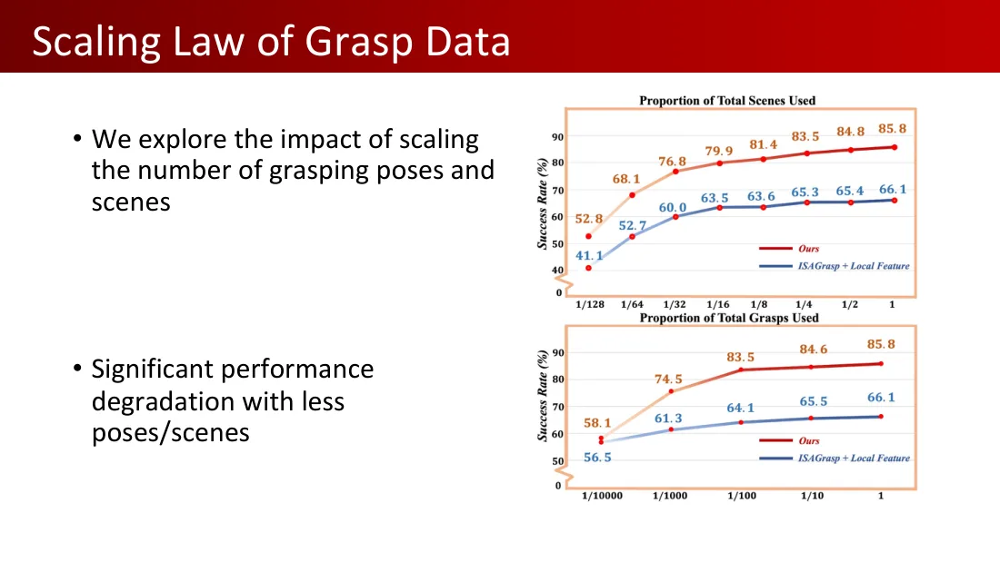
- 探索扩大抓取位姿数量和场景数量的影响。
- 使用更少位姿/场景时，性能显著下降。
使用的总场景比例：成功率（%）
| 比例 | 本文方法 | ISAGrasp＋局部特征 |
|---|---|---|
| 1/128 | 52.8 | 41.1 |
| 1/64 | 68.1 | 52.7 |
| 1/32 | 76.8 | 60.0 |
| 1/16 | 79.9 | 63.5 |
| 1/8 | 81.4 | 63.6 |
| 1/4 | 83.5 | 65.3 |
| 1/2 | 84.8 | 65.4 |
| 1 | 85.8 | 66.1 |
使用的总抓取比例：成功率（%）
| 比例 | 本文方法 | ISAGrasp＋局部特征 |
|---|---|---|
| 1/10000 | 58.1 | 56.5 |
| 1/1000 | 74.5 | 61.3 |
| 1/100 | 83.5 | 64.1 |
| 1/10 | 84.6 | 65.5 |
| 1 | 85.8 | 66.1 |
Lecture 07 · PDF p47
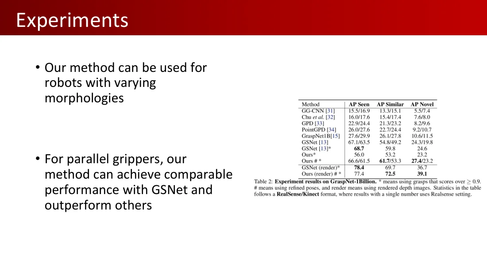
- 我们的方法可用于具有不同形态的机器人。
- 对于平行夹爪，我们的方法能够达到与GSNet相近的性能，并优于其他方法。
| 方法 | 已见物体AP | 相似物体AP | 新物体AP |
|---|---|---|---|
| GG-CNN [31] | 15.5/16.9 | 13.3/15.1 | 5.5/7.4 |
| Chu等[32] | 16.0/17.6 | 15.4/17.4 | 7.6/8.0 |
| GPD [33] | 22.9/24.4 | 21.3/23.2 | 8.2/9.6 |
| PointGPD [34] | 26.0/27.6 | 22.7/24.4 | 9.2/10.7 |
| GraspNet1B [15] | 27.6/29.9 | 26.1/27.8 | 10.6/11.5 |
| GSNet [13] | 67.1/63.5 | 54.8/49.2 | 24.3/19.8 |
| GSNet [13]* | 68.7 | 59.8 | 24.6 |
| 本文方法 | 56.0 | 53.2 | 23.2 |
| 本文方法 # * | 66.6/61.5 | 61.7/53.3 | 27.4/23.2 |
| GSNet（渲染）* | 78.4 | 69.7 | 36.7 |
| 本文方法（渲染）# * | 77.4 | 72.5 | 39.1 |
表2：GraspNet-1Billion实验结果。*表示采用分数大于0.9的抓取；#表示采用精化位姿；“渲染”表示使用渲染深度图。表中统计采用RealSense/Kinect格式，单个数字的结果使用RealSense设置。
Lecture 07 · PDF p48
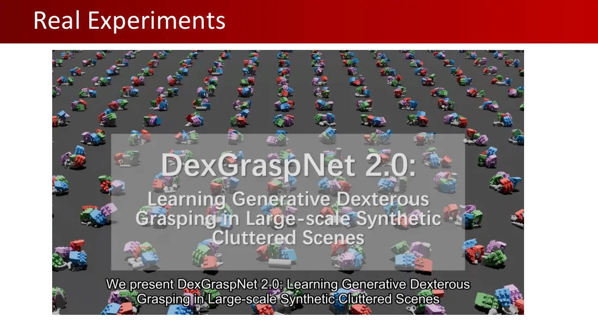
DexGraspNet 2.0：在大规模合成杂乱场景中学习生成式灵巧抓取
我们提出DexGraspNet 2.0：在大规模合成杂乱场景中学习生成式灵巧抓取。
Lecture 07 · PDF p49
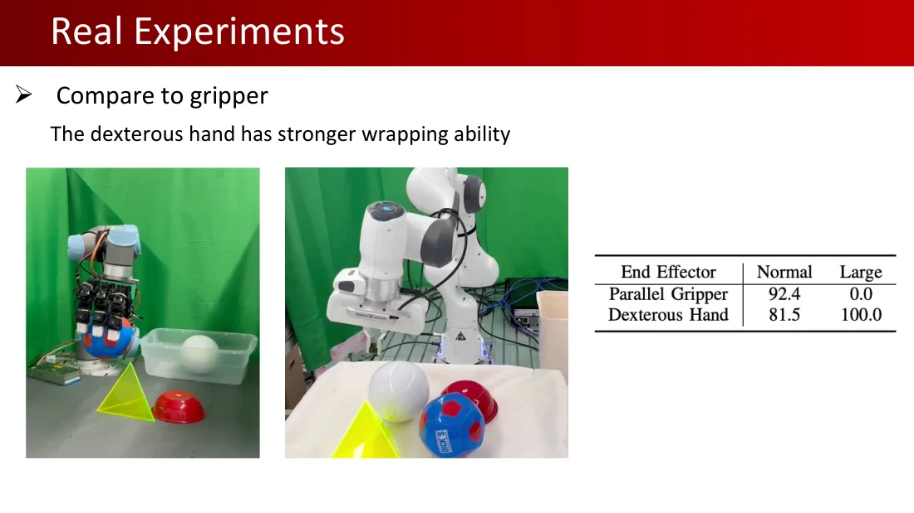
与夹爪比较
灵巧手有更强的包裹能力。
| 末端执行器 | 普通 | 大型 |
|---|---|---|
| 平行夹爪 | 92.4 | 0.0 |
| 灵巧手 | 81.5 | 100.0 |
Lecture 07 · PDF p50
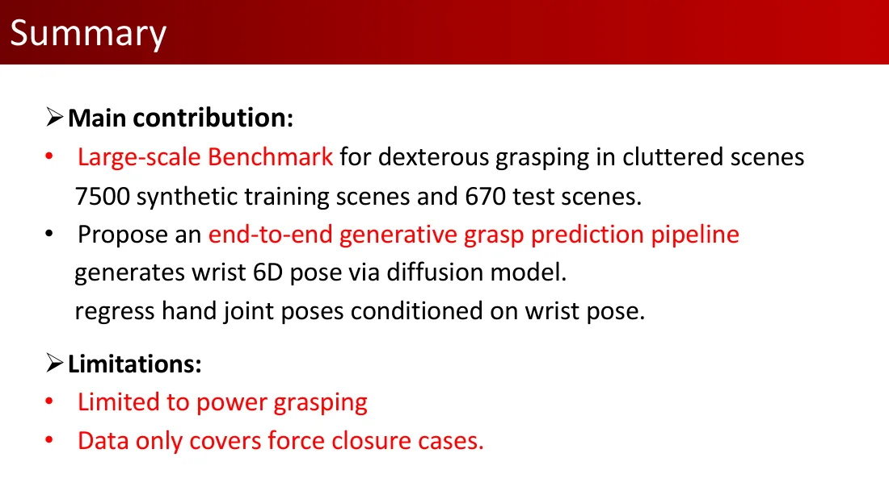
主要贡献
- 杂乱场景灵巧抓取的大规模基准：7500个合成训练场景与670个测试场景。
- 提出端到端生成式抓取预测管线。
- 通过扩散模型生成手腕6D位姿。
- 在手腕位姿条件下回归手关节姿态。
局限
- 限于力量型/包裹式抓取。
- 数据仅覆盖力闭合情况。
Lecture 07 · PDF p51
Lecture 07 · PDF p52
Lecture 07 · PDF p53
Lecture 07 · PDF p54
Lecture 07 · PDF p55
Lecture 07 · PDF p56
Lecture 07 · PDF p57
Lecture 07 · PDF p58
Lecture 07 · PDF p59
Lecture 07 · PDF p60
Lecture 07 · PDF p61
Lecture 07 · PDF p62
Lecture 07 · PDF p63
Lecture 07 · PDF p64
Lecture 07 · PDF p65
Lecture 07 · PDF p66
Lecture 07 · PDF p67
Lecture 07 · PDF p68
Lecture 07 · PDF p69

下周：第7讲，视觉与抓取 III。
具身感知与交互实验室｜2025年春季